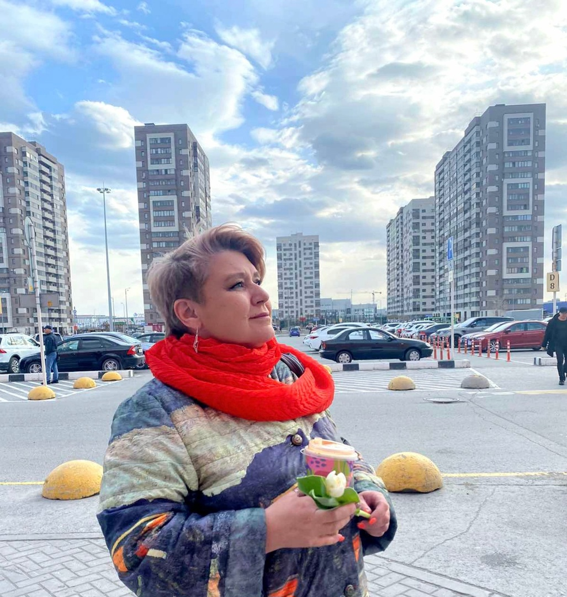
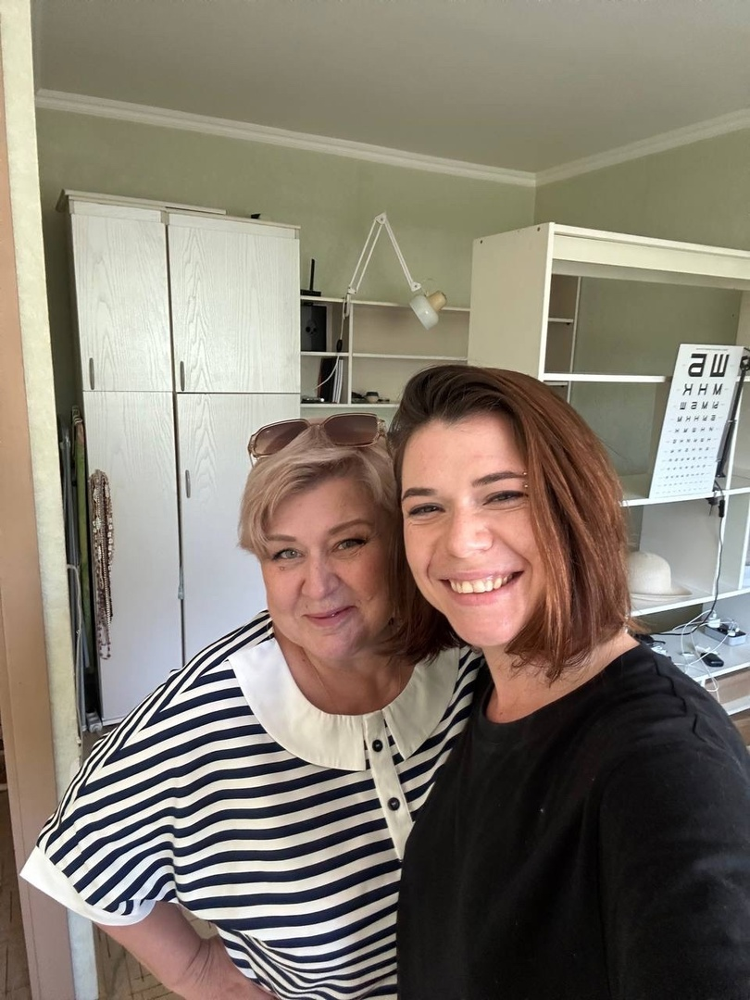

Вот только пусть хоть кто-нибудь попробует теперь мне возразить:
«Я не смогу с этим всем разобраться»
«У меня особая ниша»
«Мне эти все технические штуки не даются»
Я на практике доказала, что любой сможет заниматься продвижением своего дела в VK.
Любой может оформить группу и запустить рекламу. От самых молодых до самых взрослых ремесленников! Даже в такой сложной нише, как риелтор (продажа и покупка недвижимости).
Для этого лишь нужны реально подробные инструкции и опытные наставники.
А Елена Хайруллина пришла учиться именно ко мне.

У нее реально сложная ниша:
- Там отложенный спрос. Люди пользуются услугами риелторов не сразу.
- Аудитория очень большая, ведь в любой момент каждый из нас может захотеть купить квартиру или продать.
- Но при этом делаем мы это обычно 1-2 раза в жизни.
Недавно я воспользовалась услугами Елены в Тюмени. Продала квартиру и купила другую.
К слову, Лена умудрилась продать нашу однушку с первого показа.
Пользуясь случаем я взяла у Лены небольшое интервью. Каково было ей освоить VK на профессиональном уровне.
— Расскажи, что было до курса, какой средний доход был в месяц? Сколько клиентов?
— Ну, во-первых, до начала курса у меня вообще было ощущение выгорания.
Мне просто необходимо было что-то новое даже не с точки зрения дохода.
Мой доход тогда упал. Если раньше в среднем было по 5-6 сделок в месяц. Я лично на каждой из них зарабатывала по 25-30 тыс, то ко времени, когда я пришла на курс, это количество сократилось.
Были и месяцы вовсе без сделок. Просто необходимо было что-то менять. Старые методы привлечения клиентов переставали работать.
Я видела, что успешная молодежь работает через соцсети.
Ну и чем я хуже молодежи?
Мой опыт и их методы))) почему бы и не да?

— Супер) Скажи, какие сложности были при прохождении курса. За сколько прошла обучение?
— Самое сложное – это настройка рекламы. Было впечатление, что я просто ничего не могу, не умею и у меня не получится. Вообще, все это не для меня, я тупая!!!
Но потихоньку, несколько раз пересматривая обучающие видео, все получилось. Я даже не ожидала от себя такого.
Уроки прошла, в целом, месяца за 4. Сейчас, думаю, надо пройти их заново.
— Как думаешь, с куратором было бы быстрее, легче?
Безусловно, легче. И истерик бы у меня не было))) Очень помогали зумы с вами каждый месяц.
— Какие сейчас действия делаешь для привлечения клиентов? Как часто пишешь посты? Запускаешь ли рекламу?
— Честно, я тут тормознула немного. На месяц. Но сейчас снова начала. Хочу выйти как раньше, на 3-4 поста на странице и 2-3 в группе, в неделю.
И рекламу снова запустить надо. Сейчас в нашей сфере спад конкретный, только рекламой, думаю, выправить можно.
У ЦА на глазах все время быть надо.
Но какое-то время я без рекламы работала. С ВК клиенты шли.
А раз спад клиентской активности пошел, значит рекламой подогреть надо)
Своего рода, регулирование получается)
— А можешь поделиться, как изменилась жизнь после курса?
— Сверх доходов у меня не появилось) Но я выбралась из своего выгорания, потому как мои действия стали приносить ощутимый результат. Как объяснить...
Я люблю свое дело. У нас говорят, что риелтор – это не профессия, – это образ жизни. И если раньше иногда приходилось убеждать, что я буду полезна, я помогу, я нужна. То сейчас люди сами ко мне идут. Они в ВК видят, кто я и что делаю. От этого и доверия больше.
Человек сам меня выбрал, а не я "навязалась".
Кстати, я бы еще и про «Пиши-Огонь-Посты» упомянула. После этого курса прямо качественный скачок был.
Стало больше комментариев под постами, а потом и заявок.
— Сколько сейчас зарабатываешь?
— Ну, в среднем где-то 80 в месяц. Можно больше, в разы. Но я лентяйка...
Здесь мне уже стыдно, если честно. Реально, потенциал есть, но я ленюсь.
******
Да. Порой мы все ленимся, когда достигаем достаточной суммы дохода. Главное ведь не деньги. А заниматься любимым делом.
А когда любимое дело может прокормить - это счастье.
И ради такого счастья 7 лет назад я создала курс «ВК-Бабло». Чтобы сделать счастливыми уже более 1000 человек.